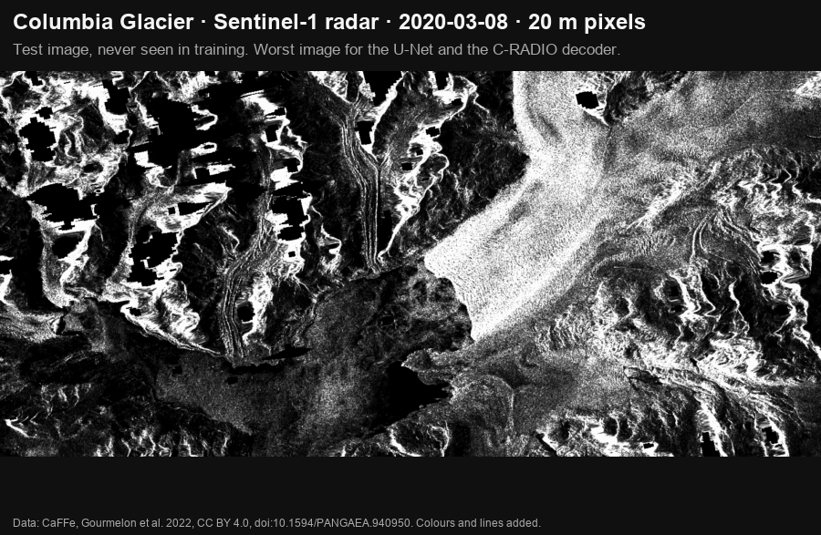

Signpost 1
Do optical foundation models transfer to SAR?
A model that learned from ordinary photos can find where a glacier ends in satellite radar pictures. A small add-on does as well as a much bigger model trained from scratch.
Glacier calving-front delineation on the CaFFe benchmark with frozen encoders. They are satellite-pretrained DINOv3, photo-pretrained DINOv3, C-RADIOv4-H and two SAR-pretrained encoders. Only small probes and heads are trained on top. A U-Net trained from scratch is the reference.
- A 0.57M-parameter decoder on frozen C-RADIO features matches the 7.8M-parameter U-Net on front error with 979 ± 31 m vs 979 m on the two test glaciers
- Per glacier it is 1,067 vs 1,080 m on Columbia and 464 vs 474 m on Mapple. The decoder misses 7–9 of 122 fronts per seed and the U-Net 3
- Zones as 3-class patch mIoU on test from a linear probe reach 0.610 on frozen photo DINOv3 and 0.602 on C-RADIO. The U-Net reaches 0.594
- Photo-pretrained encoders beat the two SAR-pretrained ones we tried by 0.22–0.25 mIoU. Satellite pretraining gave no clear advantage over photo pretraining
- Linear probes alone draw no front on 30–57% of test images. Fronts need a learned head
